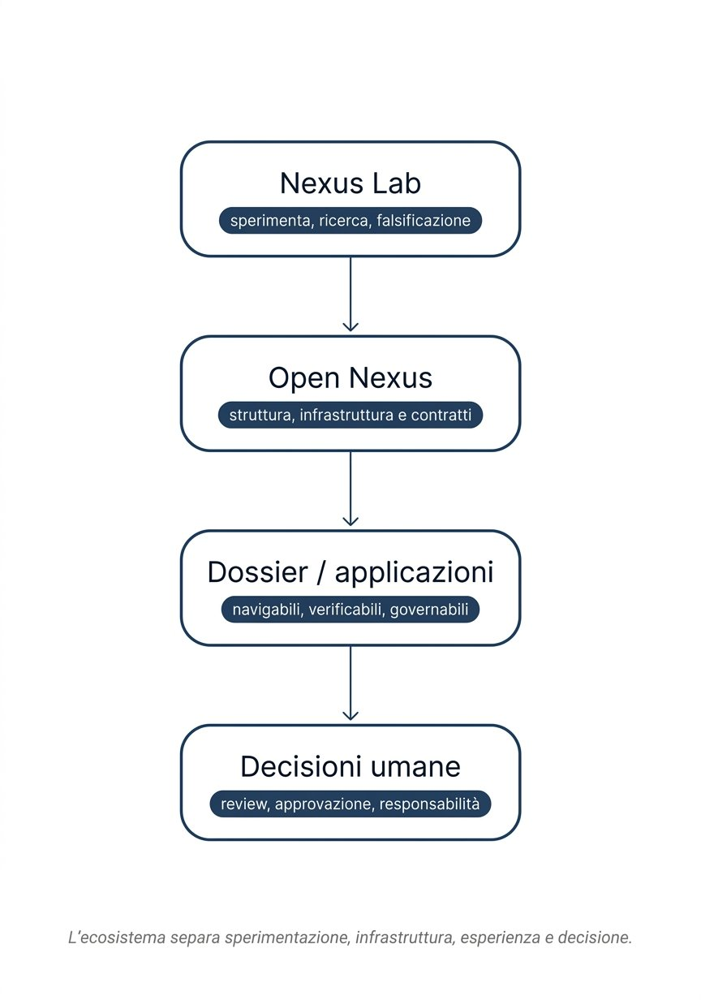
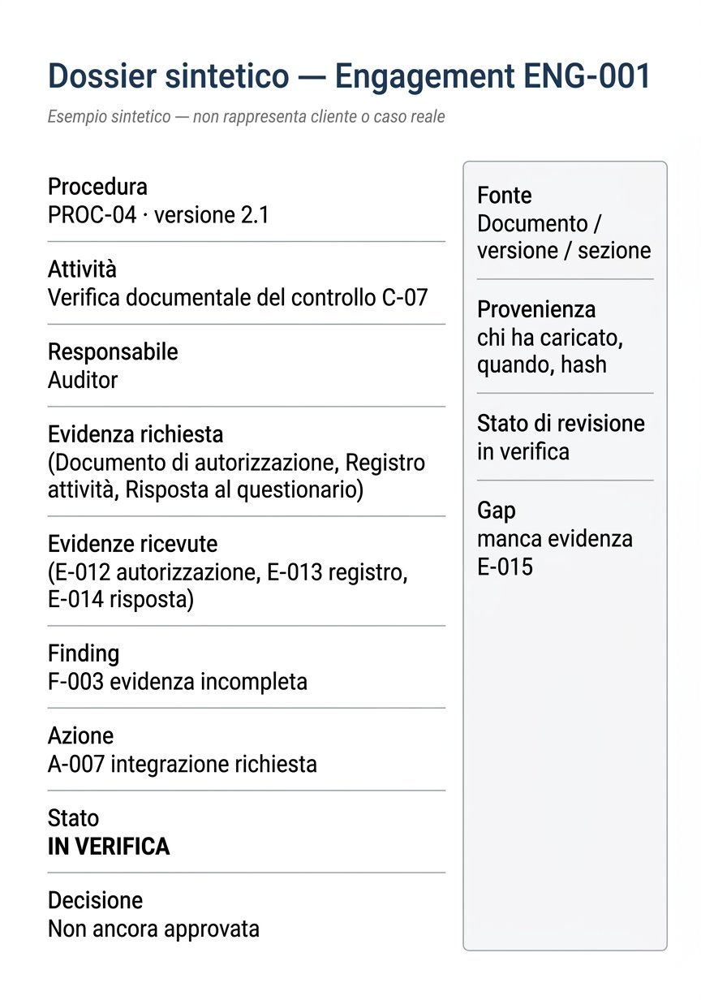

Bozza riservata · ottobre 2026 · 5 file + 2 immagini + nota personale
La conoscenza non manca, Open Nexus, Nexus Lab, ecosistema, dossier governato, come è stata preparata, primi confronti G./A., dove siamo
Apri HTML stampabile → Stampa PDFObiettivo, beneficiari, output, 5 WP, 7 milestone, rischi, criteri successo, H1-H5/F1-F6
Apri HTML → Stampa PDFProblema, proposta, stato, primo test, 3 domande
Apri HTML A5 → Stampa PDFSolo se richiesta — piattaforma, motore documentale, interfaccia, strumenti operativi
Apri HTML → Stampa PDFDue visual only per dispensa:

Ecosistema — Nexus Lab → Open Nexus → Dossier → Decisioni umane
Dossier sintetico ENG-001 — esempio sintetico non cliente realeArchiviate come VISUAL_DIRECTION_CANDIDATE: dashboard epistemiche con claim scientifici fittizi (non stampare per F.) in archive/visual-direction-candidate/